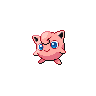
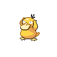
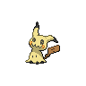
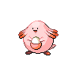
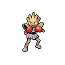
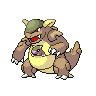
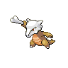

日本語と英語で名前が全然違うポケモン
英語名だけ聞いたら、どのポケモンかわかる？
ピカチュウはそのままPikachuですが、海外では日本語とまったく違う名前で呼ばれているポケモンもたくさんいます。英語名の多くは、そのポケモンの特徴を表す英単語を組み合わせて作られています。

コイキング → Magikarp
英語名「Magikarp」は、magic（魔法）とcarp（コイ）を組み合わせた名前と考えられている。

カビゴン → Snorlax
英語名「Snorlax」は、snore（いびき）、lax（ゆるい）とlackadaisical（ものぐさな）を組み合わせた名前と考えられている。

プリン → Jigglypuff
英語名「Jigglypuff」は、jiggly（ぷるぷるした）とpuff（ふくらむ）を組み合わせた名前と考えられている。

コダック → Psyduck
英語名「Psyduck」は、psy-（「心の」を表す接頭語）、psychic（超能力）とduck（カモ）を組み合わせた名前と考えられている。

ニャース → Meowth
英語名「Meowth」は、meow（ニャー）がもとになっていると考えられている。

サーナイト → Gardevoir
英語名「Gardevoir」は、garde（フランス語で「守る」）、garder（フランス語で「守る」）とdevoir（フランス語で「義務」）を組み合わせた名前と考えられている。

ガブリアス → Garchomp
英語名「Garchomp」は、chomp（むしゃむしゃ食べる）とgargantuan（巨大な）を組み合わせた名前と考えられている。

ミミッキュ → Mimikyu
英語名「Mimikyu」は、mimic（まねる）がもとになっていると考えられている。

カイリュー → Dragonite
英語名「Dragonite」は、dragon（ドラゴン）、knight（騎士）、night（夜）とdraconite（竜の頭から取れるといわれた宝石）を組み合わせた名前と考えられている。

ラッキー → Chansey
英語名「Chansey」は、chance（偶然）とchancy（運まかせの）を組み合わせた名前と考えられている。

ピッピ → Clefairy
英語名「Clefairy」は、clef（音部記号）とfairy（妖精）を組み合わせた名前と考えられている。

ルージュラ → Jynx
英語名「Jynx」は、jinx（不吉なもの）、curse（呪い）とhex（不運の呪い）を組み合わせた名前と考えられている。

サワムラー → Hitmonlee
英語名「Hitmonlee」は、hit（打つ）とmonster（怪物）を組み合わせた名前と考えられている。

エビワラー → Hitmonchan
英語名「Hitmonchan」は、hit（打つ）とmonster（怪物）を組み合わせた名前と考えられている。

ビリリダマ → Voltorb
英語名「Voltorb」は、volt（ボルト（電圧の単位））とorb（球）を組み合わせた名前と考えられている。

ガルーラ → Kangaskhan
英語名「Kangaskhan」は、kangaroo（カンガルー）とGenghis Khan（チンギス・ハン）を組み合わせた名前と考えられている。

カラカラ → Cubone
英語名「Cubone」は、cub（熊などの子）とbone（骨）を組み合わせた名前と考えられている。

ガラガラ → Marowak
英語名「Marowak」は、bone marrow（骨髄）とwhack（バシッとたたく）を組み合わせた名前と考えられている。

イシツブテ → Geodude
英語名「Geodude」は、geo-（「大地の」を表す接頭語）とdude（やつ）を組み合わせた名前と考えられている。

モンジャラ → Tangela
英語名「Tangela」は、tangle（からまる）と-ella（小さいものを表す語尾）を組み合わせた名前と考えられている。
名前を押すと、そのポケモンの英語版の図鑑の説明文と日本語訳が読めます。